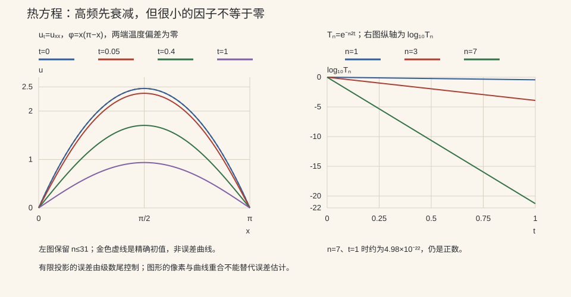

本页目录
偏微分 I · 三大方程与分离变量法
前置：Fourier级数、高阶线性ODE、Hilbert空间正交投影。先明确方程、边界与初值，再把同一组空间模态送进热、波和Laplace三种模型；每次对照都要分清有限投影与完整解。
学习层：同一组空间模态，为什么会有三种不同因子？
1. 具体情境：一根弦、一根细棒和一块边界被控制的薄板
把区间取为 \(0<x<\pi\)。一根两端固定的弦被拨成
或者一根细棒带着同样的温度初值。另一个实验室则把矩形 \(0<x<\pi,\ 0<y<\pi\) 的三条边接地，只在上边施加 \(f(x)=\sin x\)。三种装置都允许我们使用空间函数 \(\sin(nx)\)，但它们对同一个 \(n\) 的时间/纵向因子不同：热方程把高频迅速抹掉，波方程保留振荡，Laplace 方程把边界数据从 \(y=\pi\) 渗入内部。
2. 先预测，再揭示
在打开实验账本前，先写下理由：
- 对热方程 \(u_t=u_{xx}\)，\(n=7\) 与 \(n=1\) 哪个更快衰减？若时间加倍，答案会反转吗？
- 对波方程 \(u_{tt}=u_{xx}\) 且初速为零，模态系数会不会像热方程一样单调趋零？应当看 \(\cos(nt)\) 还是指数？
- 对 Laplace 方程，顶边的 \(\sin x\) 在中线 \(y=\pi/2\) 还剩下多少？它是“时间衰减”，还是从边界向内部的空间渗透？
- 对初值 \(x(\pi-x)\)，偶数 Fourier 正弦系数是否存在？取 \(N=7\) 个模态能否自动等于无穷级数解？
实验先隐藏数值；提交预测后才揭示有限模态、空间曲线与误差账。预测错了也保留，方便把“高频快衰减”“振荡不衰减”“边界渗透”逐一对照。
3. 正式模型：分离、投影与三种因子
两端固定的空间特征值问题是
对 \(\varphi(x)=x(\pi-x)\)，正交投影给出
所以 奇数 \(n\) 的系数是 \(8/(\pi n^3)\)，偶数系数恰为零。相同的空间模态在三类模型中分别乘上
实验把 \(N\) 限在一个小整数，计算的是正交投影/截断：
一般不能声称有限和已经是完整解；Laplace 预设的顶边仅为 \(\sin x\)，是 N≥1 就已精确表示的特例。截断误差可以用 Parseval 型的 \(L^2\) 尾项对账；对零初速波方程，实验另计算 \(E=\frac12\int_0^\pi(u_t^2+u_x^2)\,dx\)，并显示 \(\sqrt{2E_{>N}}\) 的能量范数尾。图上的曲线只是这些有限量的可视证据。
JavaScript 失效时的静态读法：默认取 \(N=7,\ t=0.45,\ y=\pi/2\)。下表的“有限证据”只描述当前投影；它不代替完整级数、边界正则性或极限交换的证明。
| 模型 | 默认有限因子 | 应读出的现象 | 证据边界 |
|---|---|---|---|
| 热 \(u_t=u_{xx}\) | \(T_n=e^{-n^2(0.45)}\) | \(n=7\) 比 \(n=1\) 衰减快得多 | 有限 \(N\) 的数值，不是“所有初值都这样”的单独证明 |
| 波 \(u_{tt}=u_{xx}\) | \(T_n=\cos(0.45n)\) | 模态振幅可变号但不产生指数衰减 | 理想无阻尼、固定端模型；物理能量要连同 \(u_t\) 计入 |
| Laplace | \(T_n=\sinh(n\pi/2)/\sinh(n\pi)\) | 顶边数据向内减弱，且高频渗透更浅 | 这是矩形与指定三边 Dirichlet 边界的边界值解 |
系数核对：\(b_1=8/\pi,\ b_2=0,\ b_3=8/(27\pi)\)。因此原页例 2 的 \(b_n=4(1-(-1)^n)/(\pi n^3)\) 与后面的奇数项 \(8/(\pi n^3)\) 是一致的；不能把前者误读成所有 \(n\) 都有 \(8/(\pi n^3)\)。
4. 定理与边界
在本页有限区间上的正规自伴 Sturm–Liouville 边界条件下，特征函数在相应 \(L^2\) 空间中完备，正交投影才有通往无穷级数解的理论依据。完备性来自这个理论和边界条件，不来自把 \(N\) 调大几次。热方程的高频衰减、波方程的模态不衰减和 Laplace 的边界渗透也不是同一个“指数曲线”的三种画法：它们来自不同的演化/边界算子。实验能验证本例的系数、有限和与误差账；它不能证明 Sturm--Liouville 完备性，也不能把无阻尼波、给定矩形边界值问题的结论外推到阻尼、变系数、非矩形域或非齐次边界。
1. 分类先看主部，适定性还要看数据空间
| 典型方程 | 模型行为 | 定解数据 |
|---|---|---|
| \(u_{tt}=c^2u_{xx}\)，\(c>0\) | 理想无阻尼波以有限速度传播 | 初位移、初速度，加空间边界条件 |
| \(u_t=\kappa u_{xx}\)，\(\kappa>0\) | 扩散、正时间平滑化 | 一个初值，加空间边界条件 |
| \(u_{xx}+u_{yy}=0\) | 平衡，无时间变量 | 整个边界上的适当条件 |
在两个独立变量中，实二阶主部 \(Au_{xx}+2Bu_{xy}+Cu_{yy}\) 的矩阵为 \(\begin{pmatrix}A&B\\B&C\end{pmatrix}\)。在该点主部非零的前提下，\(B^2-AC\) 的正、负、零分别对应双曲、椭圆和退化的抛物型候选；变系数方程的型可以随位置变化。仅有判别式为零还不能保证它具有标准前向热方程的演化结构，低阶时间项及其符号也要核对。
边界条件分别可给值（Dirichlet）、法向导数或通量（Neumann）、两者组合（Robin）。适定性要求存在、唯一和对数据连续依赖；“连续”必须指定范数与时间方向。前向热方程在 \(L^2\) 中压缩误差，逆向恢复初态却可能把微小高频噪声放大，这是热逆问题综合项目的入口。
无限传播速度是理想热方程在连通介质中的性质，不是声波或真实材料任意短尺度的普遍规律。Laplace 方程也不能任意同时指定全边界的值和法向导数；数据可能互不相容。
2. 分离变量为什么会产生离散模态？
考虑均匀细棒的温度偏差
取非零乘积试探 \(u=X(x)T(t)\)，在非零区域代入有 \(T'/(\kappa T)=X''/X=-\lambda\)。更稳妥的全域说法是要求 \(-X''=\lambda X\)、\(T'=-\kappa\lambda T\)；最后的解跨过 \(X\) 的零点仍成立，不需要在节点除以零。
两端为零时，分部积分给
\(\lambda=0\) 迫使 \(X\) 常数，再由边界得零解；故非平凡模态有 \(\lambda>0\)。解 \(X''+\lambda X=0\) 并配两端边界，得到
不同特征值的正交性也来自分部积分：将 \((-X_m'')X_n-X_m(-X_n'')\) 积分，边界项为零，于是 \((\lambda_m-\lambda_n)\int X_mX_n=0\)。找到正交函数还不等于证明完备。 在有限区间上，Dirichlet 算子 \(-d^2/dx^2\) 是无界自伴算子，其逆作为 \(L^2\) 上的算子紧且自伴，才可借紧自伴谱定理建立相应完备基；不能把微分算子本身直接称为紧算子。
时间因子为 \(e^{-\kappa\lambda_n t}\)。利用 \(\int_0^L X_n^2dx=L/2\)，初值的正交投影给
若 \(\varphi\in L^2(0,L)\)，先把级数理解为 \(L^2\) 解，\(t\downarrow0\) 时在 \(L^2\) 意义恢复初值。对任意 \(t\ge\delta>0\)，指数压过求导引入的任意多项式频率因子，由 Cauchy–Schwarz 可控制各阶导数级数，因此正时间可以逐项求导。若要求连同角点 \((0,0),(L,0)\) 的经典连续解，还需初值与边界兼容；更高正则性需要更多兼容条件。Lebl，热方程与分离变量
误差和唯一性从同一个能量式读出
对光滑的齐次边界解，令 \(H=\frac12\int_0^Lu^2dx\)，则
两解之差若初值为零，这个式子迫使其一直为零，给出唯一性；对弱解可由逼近得到相应估计。Poincaré 不等式又给 \(H'\le-2\kappa\lambda_1H\)，所以 \(\|u(t)\|_2\le e^{-\kappa\lambda_1t}\|\varphi\|_2\)。长期主导项是初值实际激发的最小模态；若 \(b_1=0\)，不能仍宣称第一模态必然统治。
3. 本例的系数、尾项和图形如何复算？

设 \(I_n=\int_0^\pi x(\pi-x)\sin(nx)dx\)。两次分部积分，第一步端点因 \(\varphi=0\) 消失，第二步的正弦端点项也消失，留下
所以 \(b_n=4(1-(-1)^n)/(\pi n^3)\)：奇数系数 \(8/(\pi n^3)\)，偶数零。Parseval 给出本例的两个解析总量：
对热或零初速波模型，当前位移截断的平方误差为
实验从 \(N+1\) 直接累加至 \(M=512\)，不以两个几乎相等的总量相减。对剩余项使用保守界
这里连偶数也加入了上界，因此无需猜测遗漏奇数项的大小。有限尾和开平方给下端，有限尾和加上此界再开平方给上端；端点仍用浮点计算，图中相同的舍入文字不表示数学区间宽度严格为零。极小热尾通过对数求和后再开方，避免平方先下溢。
金线是精确初值 \(x(\pi-x)\)（Laplace 模式则为顶边 \(\sin x\)），不是高阶截断偷偷冒充的真解；它用于显示演化与初态差异，蓝金线差并不是当前截断误差。当前误差读上述尾项账本。
4. 换方程、换边界，各会改变什么？
波动：位移和速度一起守恒
固定端波方程 \(u_{tt}=c^2u_{xx}\)，初位移 \(\varphi\)、初速 \(\psi\)，展开为
其中 \(b_n,d_n\) 分别是两个初值的正弦系数。若 \(\varphi\in H_0^1(0,L)\)、\(\psi\in L^2(0,L)\)，可按能量解理解该级数；波演化不像热演化那样自动平滑初值，要得到更高阶经典导数须另加正则性和兼容条件。实验只取 \(c=1,L=\pi,\psi=0\)。单看位移 \(L^2\) 范数可以起伏；能量应为 \(E=\frac12\int(u_t^2+c^2u_x^2)dx\)，由方程分部积分得 \(E'=c^2[u_tu_x]_0^L=0\)。固定边界令端点速度为零。有限模态同样精确守恒，实验能量范数尾用解析总能量 \(\pi^3/6\) 减去保留模态的能量，而非把512项称为无限总量。
Laplace：空间渗透，不是时间演化
在矩形 \(0<x<L,0<y<H\)，三边零、顶边 \(g(x)\)。若 \(g_n\) 是顶边正弦系数，则
分母确保顶边恢复 \(g\)；它不能被略掉后仍把 \(g_n\) 称为同一个 Fourier 系数。要求四个角连续还需顶边数据与两侧零值兼容。本实验 \(L=H=\pi,g=\sin x\)，只有第一模态被激发，故 N≥1 已经是完整解；其余传递因子虽然可计算，却对应零系数。中线衰减为 \(\sinh(\pi/2)/\sinh\pi=1/[2\cosh(\pi/2)]\)。
Neumann 边界会多一个零模态
绝热热边界 \(u_x(0,t)=u_x(L,t)=0\) 给余弦系，包含常数 \(n=0\)、特征值零。平均温度守恒，高频衰减后通常趋向初始平均值，不能照搬 Dirichlet 的“趋零”。在连通光滑有界域上，稳态纯 Neumann 问题 \(\Delta u=f,\partial_nu=g\) 必须满足 \(\int_\Omega f=\int_{\partial\Omega}g\)，且解只在加常数意义下唯一；这由散度定理和齐次能量法直接看出。
非齐次边界会带来新的源项
对热方程 \(u_t=\kappa u_{xx}+s\)，边界值为 \(a(t),b(t)\) 时，可取 \(\ell(x,t)=(1-x/L)a(t)+(x/L)b(t)\)，令 \(v=u-\ell\)。虽然 \(v\) 的边界齐次，方程却变为 \(v_t=\kappa v_{xx}+s-\ell_t\)，初值也要减去 \(\ell(x,0)\)。源项展开为 \(f_n(t)\) 后，模态满足
只有边界随时间不变时，上面这个线性提升的 \(\ell_t\) 才消失。“减一个函数”不能把它产生的项忘掉。
5. 迁移与核对
- 固定端热方程 \(L=\pi,\kappa=1\)，初值 \(\sin3x\)。写解和 \(L^2\) 衰减率，解释第一模态为什么没有主导。再把边界改为绝热，初值改为 \(2+\cos3x\)，长期极限是什么？
- 本例抛物线初值的 \(N=1\) 初始 \(L^2\) 尾与零初速波能量范数尾分别是多少？它们为何不是同一种误差？
- 求 \(u_t=u_{xx}\)、\(u(0,t)=t,u(\pi,t)=0\) 经线性边界提升后的源项和正弦系数。同时求矩形顶边为 \(\sin3x\)、其他三边零时中线的衰减因子。
展开核对零模态、两种尾与边界源项
1. \(u=e^{-9t}\sin3x\)，\(\|u\|_2=\sqrt{\pi/2}\,e^{-9t}\)。\(b_1=0\)，最低被激发频率为3。绝热对照为 \(u=2+e^{-9t}\cos3x\)，极限为2；常数零模态不衰减。
2. 第一模态位移平方范数为 \((\pi/2)(8/\pi)^2=32/\pi\)，所以初始位移尾为 \(\sqrt{\pi^5/30-32/\pi}\)。第一模态波能量为 \(16/\pi\)，能量范数尾为 \(\sqrt{2(\pi^3/6-16/\pi)}\)。后者控制速度与空间梯度，对高频多加了频率权重；它在无阻尼波演化中守恒，位移尾则随时间变化。
3. 取 \(\ell=t(1-x/\pi)\)，\(v_t=v_{xx}-(1-x/\pi)\)。源项系数为 \(f_n=-(2/\pi)\int_0^\pi(1-x/\pi)\sin(nx)dx=-2/(\pi n)\)，不能设成零。Laplace 对照只有第三模态，中线因子是 \(\sinh(3\pi/2)/\sinh(3\pi)=1/[2\cosh(3\pi/2)]\)，比第一模态渗透更弱。